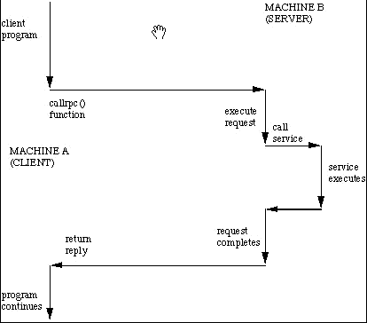
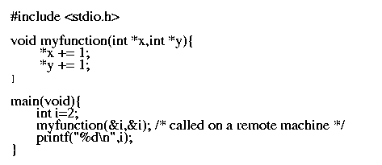
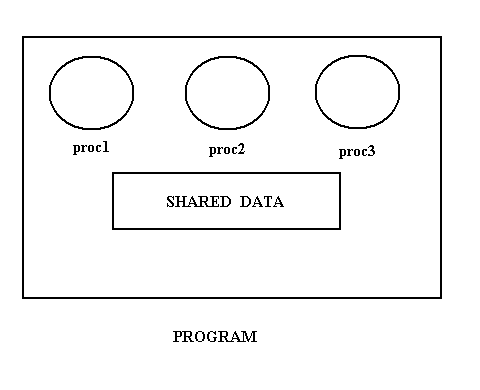

There is a possibility of having computers of different architectures in the same network. For e.g. we may have DEC or Intel machines ( which use Little-endian representation) connected with IBM or Motorola PCs (which use Big-endian representation) . Now a message from an Intel machine, sent in Little-endian order, may be interpreted by an IBM machine in Big-endian format. This will obviously give erroneous results. So we must have some strategy to convert data from one machine's native format to the other one's or, to some standard network format.
Available Methods :
- Abstract Syntax Notation (ASN.1) : This is the notation developed by the ISO, to describe the data structures used in communication, in a flexible yet standard enough way. The basic idea is to define all the data structure types ( i.e., data types) needed by each application in ASN.1 and package them together in a module. When an application wants to transmit a data structure, it can pass the data structure to the presentation layer, along with the ASN.1 name of the data structure. Using the ASN.1 definition as a guide, the presentation layer then knows what the types and sizes of the fields are, and thus know how to encode them for transmission ( Explicit Typing). It can be implemented with Asymmetric or Symmetric data conversion.
- External Data Representation (XDR) : This is implemented using Symmetric data representation. XDR is the standard representation used for data traversing the network. XDR provides representations for most of the structures that a C-program can specify. However the encodings contain only data items and not information about their types. Thus, client and servers using XDR must agree on the exact format of messages that they will exchange ( Implicit Typing ).
The chief advantage lies in flexibility: neither the server nor the client need to understand the architecture of the other. But, computational overhead is the main disadvantage. Nevertheless, it simplifies programming, reduces errors, increases interoperability among programs and makes easier network management and debugging.
The Buffer Paradigm : XDR uses a buffer paradigm which requires a program to allocate a buffer large enough to hold the external representation of a message and to add items (i.e., fields) one at a time. Thus a complete message is created in XDR format.
RPC comes under the Application-Oriented Design, where the client-server communication is in the form of Procedure Calls. We call the machine making the procedure call as client and the machine executing the called procedure as server. For every procedure being called there must exist a piece of code which knows which machine to contact for that procedure. Such a piece of code is called a Stub. On the client side, for every procedure being called we need a unique stub. However, the stub on the server side can be more general; only one stub can be used to handle more than one procedures (see figure ). Also, two calls to the same procedure can be made using the same stub.
Now let us see how a typical remote procedure call gets executed :-

- Client program calls the stub procedure linked within its own address space. It is a normal local call.
- The client stub then collects the parameters and packs them into a message (Parameter Marshalling). The message is then given to the transport layer for transmission.
- The transport entity just attaches a header to the message and puts it out on the network without further ado.
- When the message arrives at the server the transport entity there passes it tot the server stub, which unmarshalls the parameters.
- The server stub then calls the server procedure, passing the parameters in the standard way.
- After it has completed its work, the server procedure returns, the same way as any other procedure returns when it is finished. A result may also be returned.
- The server stub then marshalls the result into a message and hands it off at the transport interface.
- The reply gets back to the client machine.
- The transport entity hands the result to the client stub.
- Finally, the client stub returns to its caller, the client procedure, along-with the value returned by the server in step 6.
This whole mechanism is used to give the client procedure the illusion that it is making a direct call to a distant server procedure. To the extent the illusion exceeds, the mechanism is said to be transparent. But the transparency fails in parameter passing. Passing any data ( or data structure) by value is OK, but passing parameter 'by reference' causes problems. This is because the pointer in question here, points to an address in the address space of the client process, and this address space is not shared by the server process. So the server will try to search the address pointed to by this passed pointer, in its own address space. This address may not have the value same as that on the client side, or it may not lie in the server process' address space, or such an address may not even exist in the server address space.
One solution to this can be Copy-in Copy-out. What we pass is the value of the pointer, instead of the pointer itself. A local pointer, pointing to this value is created on the server side (Copy-in). When the server procedure returns, the modified 'value' is returned, and is copied back to the address from where it was taken (Copy-out). But this is disadvantageous when the pointer involved point to huge data structures. Also this approach is not foolproof. Consider the following example ( C-code) :

The procedure 'myfunction()' resides on the server machine. If the program executes on a single machine then we must expect the output to be '4'. But when run in the client-server model we get '3'. Why ? Because 'x, and 'y' point to different memory locations with the same value. Each then increments its own copy and the incremented value is returned. Thus '3' is passed back and not '4'.
Many RPC systems finesse the whole problem by prohibiting the use of reference parameters, pointers, function or procedure parameters on remote calls (Copy-in). This makes the implementation easier, but breaks down the transparency.
Protocol :Idempotent Operations:
Semantics of RPC :If the server crashes, in the middle of the computation of a procedure on behalf of a client, then what must the client do? Suppose it again sends its request, when the server comes up. So some part of the procedure will be re-computed. It may have instructions whose repeated execution may give different results each time. If the side effect of multiple execution of the procedure is exactly the same as that of one execution, then we call such procedures as Idempotent Procedures. In general, such operations are called Idempotent Operations.
For e.g. consider ATM banking. If I send a request to withdraw Rs. 200 from my account and some how the request is executed twice, then in the two transactions of 'withdrawing Rs. 200' will be shown, whereas, I will get only Rs. 200. Thus 'withdrawing is a non-idempotent operation. Now consider the case when I send a request to 'check my balance'. No matter how many times is this request executed, there will arise no inconsistency. This is an idempotent operation.
If all operations could be cast into an idempotent form, then time-out and retransmission will work. But unfortunately, some operations are inherently non-idempotent (e.g., transferring money from one bank account to another ). So the exact semantics of RPC systems were categorized as follows:
- Exactly once : Here every call is carried out 'exactly once', no more no less. But this goal is unachievable as after a server crash it is impossible to tell that a particular operation was carried out or not.
- At most once : when this form is used control always returns to the caller. If everything had gone right, then the operation will have been performed exactly once. But, if a server crash is detected, retransmission is not attempted, and further recovery is left up to the client.
- At least once : Here the client stub keeps trying over and over, until it gets a proper reply. When the caller gets control back it knows that the operation has been performed one or more times. This is ideal for idempotent operations, but fails for non-idempotent ones.
- Last of many : This a version of 'At least once', where the client stub uses a different transaction identifier in each retransmission. Now the result returned is guaranteed to be the result of the final operation, not the earlier ones. So it will be possible for the client stub to tell which reply belongs to which request and thus filter out all but the last one.

Sun RPC allows both TCP and UDP for communication between remote procedures and programs calling them. It uses the at least once semantic i.e., the remote procedure is executed at least once. It uses copy-in method of parameter passing but does not support copy-out style. It uses XDR for data representation. It does not handle orphans(which are servers whose corresponding clients have died). Thus if a client gives a request to a server for execution of a remote procedure and eventually dies before accepting the results, the server does not know whom to reply. It also uses a tool called rpcgen to generate stubs automatically.
Let us suppose that a client (say client1) wants to execute procedure P1(in the figure above). Another client (say client2) wants to execute procedure P2(in the figure above). Since both P1 and P2 access common global variables they must be executed in a mutually exclusive manner. Thus in view of this Sun RPC provides mutual exclusion by default i.e. no two procedures in a program can be active at the same time. This introduces some amount of delay in the execution of procedures, but mutual exclusion is a more fundamental and important thing to provide, without it the results may go wrong.
Thus we see that anything which can be a threat to application programmers, is provided by SUN RPC.
(program number, version number, procedure number)
Thus it is possible to migrate from one version of a remote procedure to another gracefully and to test a new version of the server while an old version of the server continues to operate.
If an RPC program does not use a reserved, well-known protocol port, clients cannot contact it directly. Because, when the server (remote program) begins execution, it asks the operating system to allocate an unused protocol port number. The server uses the newly allocated protocol port for all communication. The system may choose a different protocol port number each time the server begins(i.e., the server may have a different port assigned each time the system boots).
The client (the program that issues the remote procedure call) knows the machine address and RPC program number for the remote program it wishes to contact. However, because the RPC program (server) only obtains a protocol port after it begins execution, the client cannot know which protocol port the server obtained. Thus, the client cannot contact the remote program directly.
To allow clients to contact remote programs, the Sun RPC mechanism includes a dynamic mapping service. The RPC port mapping mechanism uses a server to maintain a small database of port mappings on each machine. This RPC server waits on a particular port number (111) and it receives the requests for all remote procedure calls.
Whenever a remote program (i.e., a server) begins execution, it allocates a local port that it will use for communication. The remote program then contacts the server on its local machine for registration and adds a pair of integers to the database:
(RPC program number, protocol port number)
Once an RPC program has registered itself, callers on other machines can find its protocol port by sending a request to the server. To contact a remote program, a caller must know the address of the machine on which the remote program executes as well as the RPC program number assigned to the program. The caller first contacts the server on the target machine, and sends an RPC program number. The server returns the protocol port number that the specified program is currently using. This server is called the RPC port mapper or simply the port mapper. A caller can always reach the port mapper because it communicates using the well known protocol port, 111. Once a caller knows the protocol port number the target program is using, it can contact the remote program program directly.